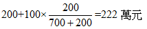
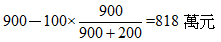

房地市場價格分析(一)
所稱房地市場價格，指建物及其基地之市價，亦即房地結合體之市價。本文所稱之價格，皆指總價而言。茲就原料與產品二方面分析說明：
• (一) 就原料而論：
-
素地價格：指不考慮房地產品對土地價格之影響，而單就土地在最有效使用下之價格。土地有增值，而無折舊。
-
建物成本價格：指不考慮房地產品對建物價格之影響，而單就建物在時間經歷下之價格。建物有折舊，而無增值。
-
房地市場價格之構成：素地價格與建物成本之和，未必等於房地市場價格。亦即： 素地價格+建物成本價格≠房地市場價格茲分下列二種情形：(1)素地價格+建物成本價格＜房地市場價格：表示土地與建物二種原料結合而成為產品時，存在「利潤」。換言之，產品價格大於原料價格。通俗的說，麵包價格大於麵粉價格。(2)素地價格+建物成本價格＞房地市場價格：表示土地與建物二種原料結合而成為產品時，存在「虧損」。換言之，產品價格小於原料價格。通俗的說，麵包價格小於麵粉價格。
• (二) 就產品而論：
房地市場價格可以拆分為土地價格與建物價格二部份。前者稱為土地貢獻價值；後者稱為建物貢獻價值。亦即：房地市場價格=土地貢獻價值+建物貢獻價值
拆分之方法有三：
-
土地貢獻說：將利潤或虧損歸屬於土地之貢獻。
-
建物貢獻說：將利潤或虧損歸屬於建物之貢獻。
-
聯合貢獻說：將利潤或虧損歸屬於土地及建物二者共同之貢獻。
[例題]
房地市場價格1,000萬元，素地價格700萬元，建物成本價格200萬元。1,000－700－200=100萬元(利潤)
-
土地貢獻說：①土地貢獻價值：700+100=800萬元②建物貢獻價值：200萬元
-
建物貢獻說：①土地貢獻價值：700萬元②建物貢獻價值：200+100=300萬元
-
聯合貢獻說：①土地貢獻價值：[圖片1]②建物貢獻價值：[圖片2]
房地市場價格1,000萬元，素地價格900萬元，建物成本價格200萬元。1,000－900－200= -100萬元(虧損)
-
土地貢獻說：①土地貢獻價值：900－100=800萬元②建物貢獻價值：200萬元
-
建物貢獻說：①土地貢獻價值：900萬元②建物貢獻價值：200－100=100萬元
-
聯合貢獻說：①土地貢獻價值：[圖片3]②建物貢獻價值：[圖片4]
待續...
這篇文章考過哪些題目
讀完試著自己作答，再點進去對答案。依文字相似度自動比對，不一定完全對應。
- 108 經紀人《不動產估價概要》第 16 題
不動產估價技術規則第99 條之計算公式，勘估標的之基地價格＝勘估標的之房地價格－勘估標的之建物成本價格。請問此為何種學說… - 99 高考《不動產估價》第 2 題
國有財產的經營管理目標為「變產置產、創造永續財源」，請嘗試以「土地貢獻說」原則，說明國有區分所有建物及其基地的價格的計價… - 99 高考《不動產估價》第 2 題
國有財產的經營管理目標為「變產置產、創造永續財源」，請嘗試以「土地貢獻說」原則，說明國有區分所有建物及其基地的價格的計價… - 108 高考《不動產估價》第 2 題
有關房地結合所產生之超額利潤歸屬，有那些不同的觀點，又地價調查估計規則與不動產估價技術規則採用的觀點各為何？（25分） - 103 高考《不動產估價》第 3 題
何謂「土地貢獻說」？何謂「聯合貢獻說」？試依附建物土地之估價說明之。另不動產估價技術規則第125條中，分算各區分所有建物… - 110 高考《不動產估價》第 2 題
由不動產格分離土地價格之方法，可採抽取法(extraction method)或分配法(allocation metho… - 112 經紀人《不動產估價概要》第 21 題
有關房地成本價格之計算公式，下列何者正確？ - 99 高考《不動產估價》第 4 題
有時為因應估價目的必須依據房地收益單獨求取土地或房屋價格，請列式說明何謂土地殘餘法？並分析該法之優點與運用時應注意之事項…
另有 3 題相近，可從題目頁的「延伸閱讀」找到本文。
文章圖片


